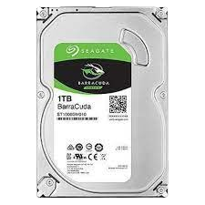

HDD(Hard disk drive)
HDD(Hard disk drive) คืออะไร
ฮาร์ดดิสก์ไดรฟ์ของคอมพิวเตอร์ (HDD) เป็นอุปกรณ์จัดเก็บข้อมูลที่ไม่ลบเลือน แบบไม่ลบเลือนหมายถึงอุปกรณ์จัดเก็บข้อมูลที่รักษาข้อมูลที่เก็บไว้เมื่อปิดเครื่อง คอมพิวเตอร์ทุกเครื่องจำเป็นต้องมีอุปกรณ์จัดเก็บข้อมูล และ HDD เป็นเพียงตัวอย่างหนึ่งของอุปกรณ์จัดเก็บข้อมูลประเภทหนึ่ง โดยปกติแล้ว HDD จะถูกติดตั้งไว้ภายในคอมพิวเตอร์เดสก์ท็อป อุปกรณ์พกพา เครื่องใช้ไฟฟ้า และอาร์เรย์จัดเก็บข้อมูลระดับองค์กรในศูนย์ข้อมูล พวกเขาสามารถจัดเก็บระบบปฏิบัติการ โปรแกรมซอฟต์แวร์ และไฟล์อื่นๆ โดยใช้ดิสก์แม่เหล็ก โดยเฉพาะอย่างยิ่ง ฮาร์ดดิสก์ไดรฟ์ควบคุมการอ่านและการเขียนฮาร์ดดิสก์ที่ใช้จัดเก็บข้อมูล HDD ใช้เป็นอุปกรณ์จัดเก็บข้อมูลหลักหรือรองในคอมพิวเตอร์ โดยทั่วไปจะพบอยู่ในช่องใส่ไดรฟ์และเชื่อมต่อกับเมนบอร์ดผ่านสายเคเบิล Advanced Technology Attachment (ATA), Serial ATA, ATA แบบขนาน หรือ Small Computer System Interface (SCSI) รวมถึงรูปแบบอื่นๆ HDD ยังเชื่อมต่อกับหน่วยจ่ายไฟและสามารถเก็บข้อมูลที่เก็บไว้ในขณะที่ปิดเครื่องได้ ฮาร์ดดิสก์ไดรฟ์ ซึ่งมักเรียกสั้น ๆ ว่า ฮาร์ดไดรฟ์ และฮาร์ดดิสก์ไม่ใช่สิ่งเดียวกัน แต่ถูกบรรจุเป็นหน่วย และคำใดคำหนึ่งสามารถหมายถึงทั้งหน่วยได้
HDD(Hard disk drive) มีหน้าที่ทำอะไร
ฮาร์ดไดรฟ์คือส่วนประกอบฮาร์ดแวร์ที่เก็บเนื้อหาดิจิทัลทั้งหมดของคุณ เอกสาร รูปภาพ เพลง วิดีโอ โปรแกรม การตั้งค่าแอปพลิเคชัน และระบบปฏิบัติการของคุณแสดงถึงเนื้อหาดิจิทัลที่จัดเก็บไว้ในฮาร์ดไดรฟ์ ฮาร์ดไดรฟ์อาจเป็นภายนอกหรือภายในก็ได้ ทุกสิ่งที่จัดเก็บไว้ในฮาร์ดไดรฟ์จะวัดจากขนาดไฟล์ โดยทั่วไปเอกสาร (ข้อความ) จะมีขนาดเล็กมาก ในขณะที่รูปภาพมีขนาดใหญ่ เพลงมีขนาดใหญ่ขึ้น และวิดีโอมีขนาดใหญ่ที่สุด ฮาร์ดไดรฟ์จะกำหนดขนาดของไฟล์ดิจิทัลในรูปแบบเมกะไบต์ (MB) กิกะไบต์ (GB) และเทราไบต์ (TB)1
ประวัติของ HDD(Hard disk drive)
ฮาร์ดดิสก์ถูกสร้างขึ้นในปี 1953 โดยวิศวกรของ IBM ที่ต้องการค้นหาวิธีเพื่อให้เข้าถึงข้อมูลความจุสูงแบบสุ่มด้วยต้นทุนที่ต่ำ ดิสก์ไดรฟ์ที่พัฒนาขึ้นมีขนาดเท่ากับตู้เย็น สามารถจัดเก็บข้อมูลได้ 3.75 MB และเริ่มจัดส่งในปี พ.ศ. 2499 Memorex, Seagate Technology และ Western Digital เป็นผู้จำหน่ายเทคโนโลยีฮาร์ดดิสก์ไดรฟ์ในช่วงแรกๆ ขนาดฟอร์มแฟกเตอร์ของฮาร์ดดิสก์ไดรฟ์ลดลงอย่างต่อเนื่องเมื่อเทคโนโลยีพัฒนาขึ้น ในช่วงกลางทศวรรษ 1980 ได้มีการเปิดตัวฟอร์มแฟคเตอร์ขนาด 3.5 นิ้ว และ 2.5 นิ้ว และกลายเป็นมาตรฐานในคอมพิวเตอร์ส่วนบุคคล ความหนาแน่นของฮาร์ดดิสก์ไดรฟ์เพิ่มขึ้นนับตั้งแต่เทคโนโลยีได้รับการพัฒนาครั้งแรก ฮาร์ดดิสก์ไดรฟ์ตัวแรกสามารถจัดเก็บข้อมูลได้หลายเมกะไบต์ ในขณะที่ปัจจุบันมีความจุอยู่ในช่วงเทราไบต์ Hitachi Global Storage Technologies (HGST) ซึ่งปัจจุบันคือแบรนด์ Western Digital เปิดตัวฮาร์ดไดรฟ์ 1 TB ตัวแรกในปี 2550 ในปี 2558 HGST ได้ประกาศฮาร์ดไดรฟ์ 10 TB ตัวแรก และในปี 2021 Western Digital ได้เปิดตัว HDD ขนาด 20 TB สองตัว
